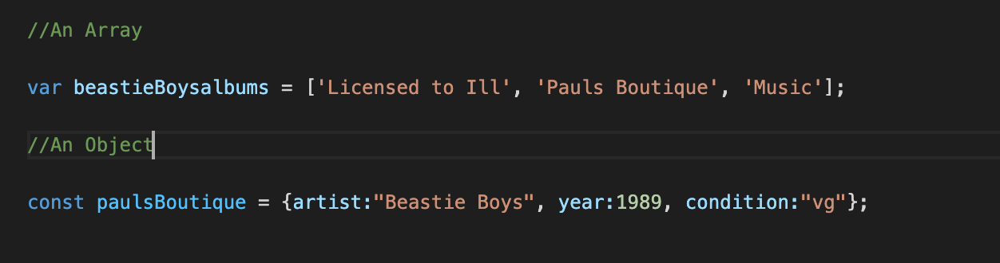

Javascript: Making the Web feel Alive - How it works with HTML and CSS and an overview of the The Dom.
September 19, 2021
So before we start our exploration into what Javascript is and how it works let's first briefly bring in HTML and CSS again and go over their respective roles using another hopefully familiar example:
Moving from left to right through the images above the first one we see is a trendy empty shelf that will one day be occupying a corner of your lounge or den. This is HTML, in this example an empty shelf that together with other elements form the basis of what makes a living space - or website - functional.
The next image along is that same shelf, now finally in your trendy New York loft, but now full of Records that you can occasionally pull out and put on 'side 1' of, y'know when you're not so busy all the time. The Records are also HTML, they are known as Div tags, and the CSS then adds details such as genre of music, cover art, gatefold packaging, or Picture Discs to our Records - in other words personality and style to our HTML to make it stand out.
So what's Javascript then? Well in our little triptych here, Javascript is represented in the right-most image and can be described with the objects that sit on the top two shelves of the unit: The Record Player and the amplifier and most importantly, and more relevantly, The DJ (not pictured). In your lounge I'm guessing the DJ is you but it could also be a DJ spinning records at a club or wedding.
These types of items make your website, or in this scenario your trendy lounge, come alive because they make interacting with your HTML and CSS possible, The DJ selects the record from the shelf, the record player then reads the grooves on a record and then before you know it you're listening to your records and hearing the music come out of your extremely expensive speakers.
So the process of putting on a record from start to finish would be:
- Selecting a record from the shelf.
- Placing the record on the turntable.
- Lifting the needle arm up on your turntable which in turn makes your record start to spin, and then putting it down into the record's groove.
- Kicking back in your armchair or getting up and dancing depending on your mood or the style of music you play. Or if you're a DJ, putting your headphones back on one ear and jumping up and down.
In Javascript we talk about that list being a control flow, in other words a list of tasks that a computer program, in this case our DJ, reads and performs (executes) in order. Now a Record of course has two sides, so if we were to get our DJ to play the second side of a Record then the list of steps in the code required would be different because for a start we have already selected the Record from the shelf. So in the code we could input a Function called, let's say, flipRecord, and have the DJ/computer program
- Lift and flip the record over and place it back on the turntable.
- Again lift the needle arm up on the turntable which in turn makes your record start to spin. Then put it down into the record's groove.
- Kick back or dance again
We could achieve this task using a particular type of Javascript Loop called a While Loop. So the record could be "playing" for as long as there was a groove to read and sound emanating from your speakers. Then when that groove ran out, signalling the end of side one, the Function flipRecord could be called which would repeat some of the steps described above to get the record "playing" again. So Functions are important because they aid us in creating loops and setting a Computer Program tasks that can be executed over and over again without the need to input repetitive code. So the DJ doesn't need to leave his booth or armchair and return to the shelf of records everytime he just wants to play Side 2.
When you start to build a record collection it can be important to start cataloguing them into some sort of database, espcially to avoid double-ups when you're away from your collection out buying records. In Javascript when can use Arrays and Objects for this purpose. For example, in my record collection I own 3 albums on vinyl by The Beastie Boys.
In the above screenshot we can see that an Array is used to store multiples items in a single variable, a variable being just a storage location for readable code that can vary. Using Javascript I can then find out if I own Paul's Boutique by accessing the 1st item in the Array. You're probably thinking "Hang on, Paul's Boutique is the 2nd item I can see." You're not wrong... but also you are, because in Javascript counting always starts at Zero, this is called Zero Indexing.
Objects on the other hand are used to drill-down on specific data on anything that can be defined as a "thing" in your code. In this case a particular album, and we're looking at Paul's Boutique once more. If god forbid I got the release year wrong or I bought a new edition of this album with say a coloured vinyl or bonus tracks, I could go into my code and add or change properties within that album's Object.
The last thing we need to talk about is the DOM, or Document Object Model. The DOM is like a map or a blueprint for a website's data and a Web Browser uses a family tree-like structure to interpret and represent that data. So the tree can be displayed in either elements and HTML tags as shown below, or in our New York Loft categories such as: Lounge / Shelves / Records / Cover Art Images / Tracklists etc.

We can use Javascript code to manipulate and change the HTML and CSS of a Webpage using the DOM in DevTools and it is readily available in most common web browsers.
Let's say you visit someone else's lounge and you get some ideas that you would like to experiment with in your own space. Well if you had a real-world equivalent of the DOM you could do just that and more importantly do it safely without having to cause massive upheaval to the contents of your lounge.
In short, using Javascript with the DOM and Devtools is like using the computer program SketchUp when you're designing and building a house. I hope all this has made sense for you, after all that I need to go and make myself a cup of Java.
- Danny
Sources used for research and graphics: Google, some of the pictures (not all) are actually my own record collection. You can probably guess which ones - hint: I don't have a trendy New York Loft.
27 Vinyl Record Storage And Shelving Solutions This store looks amazing, when I win Lotto they're going to hear from me.